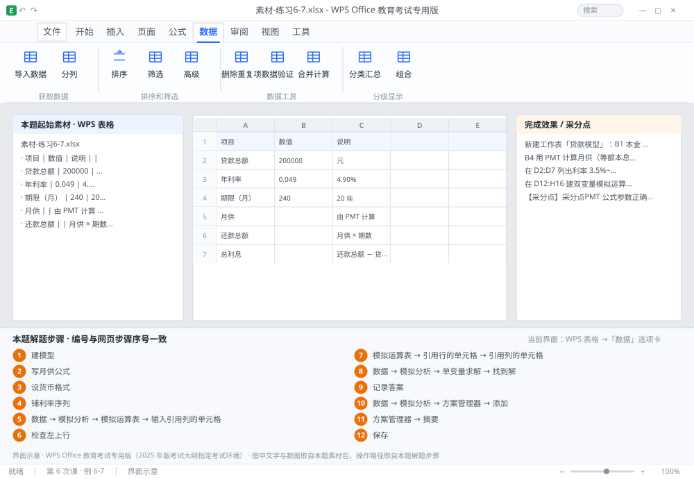

完成比对文档 · 例 6-7
贷款模型：PMT + 单变量模拟运算表 + 双变量表 + 单变量求解 + 方案 ｜ 第 6 次课 / WPS 表格 ｜ 网页：实操-表格3.html ｜ 考试环境：WPS Office 教育考试专用版（2025 年版考试大纲指定考试环境）
用途 本页按修订后的题目要求与解题步骤生成，是交卷自查的结果基准：
逐项列出每一步应出现的可复核结果，配合模拟操作截图与解题结果文件使用。
它不是素材包的一部分，不会预置答案动作；起始素材仍从本题素材包下载。
一、本题起始素材包
目录：练习素材/练习6-7-模拟分析与方案/ ｜
下载包：练习素材/下载/练习6-7-模拟分析与方案.zip
二、题目要求
- 新建工作表「贷款模型」：B1 本金 800000、B2 年利率 4.2%、B3 年限 20、B4 月供（公式）。
- B4 用 PMT 计算月供（等额本息，期末还款）。
- 在 D2:D7 列出利率 3.5%~5.5%（步长 0.25%），用单变量模拟运算表算出各利率下的月供（结果放 E2:E8）。
- 在 D12:H16 建双变量模拟运算表（行=年限 15/20/25/30，列=利率）。
- 用单变量求解：月供固定 5000 元，反推可贷本金（可变单元格 B1）。
- 用方案管理器保存 3 套方案：「保守」「标准」「激进」（利率 3.8%/4.2%/5.0%），并生成方案摘要。
- 保存为 学号-姓名-练习6-7.xlsx。
三、解题步骤（编号与下方核对表、截图编号一致）
- 建模型。B1 输入 800000、B2 输入 4.2%、B3 输入 20；A 列写好标签。
- 写月供公式。B4 输入 =PMT(B2/12,B3*12,-B1) → Enter。三个核心参数：期利率（年利率÷12）、总期数（年×12）、现值（加负号表示贷款流入，否则算出负数）。
- 设货币格式。B4 设 ¥#,##0.00，B2 设 0.00%。
- 铺利率序列。D2 输入 3.5%、D3 输入 3.75% → 选中 D2:D3 拖到 D8（得到 3.5%~5.5%）。
- 单变量模拟运算表。在 E1 输入 =B4（引用月供公式）→ 选中 D1:E8（公式格在区域左上角）→「数据」→「模拟分析」→「模拟运算表」→「输入引用列的单元格」填 $B$2（利率）→ 确定。E2:E8 自动填入对应利率下的月供。
- 检查左上行。E1 应等于 B4；若显示空白，说明公式格没放在左上角。
- 双变量表。在 D11 输入 =B4；D12:D15 输入年限 15/20/25/30；E11:H11 输入利率 3.5%/4.0%/4.5%/5.0%。选中 D11:H15 →「模拟运算表」→「引用行的单元格」填 $B$2（利率）、「引用列的单元格」填 $B$3（年限）→ 确定。
- 单变量求解。「数据」→「模拟分析」→「单变量求解」→ 目标单元格 $B$4、目标值 5000、可变单元格 $B$1 → 确定 → 求解结果会提示「找到解」。
- 记录答案。求解后 B1 变为约 81 万左右（具体随利率变化），把这个值抄到题目要求的单元格，再按 Ctrl+Z 撤销还原 B1 = 800000。
- 保存方案。「数据」→「模拟分析」→「方案管理器」→「添加」→ 方案名「保守」→ 可变单元格选 $B$2 → 输入 3.8% → 确定；再添加「标准」4.2%、「激进」5.0%。
- 生成摘要。「方案管理器」→「摘要」→ 结果单元格选 $B$4 → 确定，自动生成对比表。
- 保存。Ctrl+S。
四、完成效果 / 采分点
采分点PMT 公式参数正确（B2/12、B3*12、-B1） · 单变量模拟运算表公式格在左上且引用列为 $B$2 · 双变量表引用行 $B$2、引用列 $B$3 · 单变量求解目标 5000 且可变单元格为 B1 · 三个方案已保存且生成摘要
五、逐项完成核对表
| 步骤 | 关键操作路径 | 应出现的结果（可复核） |
|---|
| 1 | 建模型 | B1、B2、4.2%、B3 |
| 2 | 写月供公式 | B4、=PMT(、B2、B3、B1 |
| 3 | 设货币格式 | B4、B2、0.00% |
| 4 | 铺利率序列 | D2、3.5%、D3、3.75%、D2:D3 |
| 5 | 单变量模拟运算表 | E1、B4、D1:E8、「数据」、「模拟分析」 |
| 6 | 检查左上行 | E1、B4 |
| 7 | 双变量表 | D11、B4、D12:D15、E11:H11、3.5% |
| 8 | 单变量求解 | 「数据」、「模拟分析」、「单变量求解」、「找到解」 |
| 9 | 记录答案 | B1 |
| 10 | 保存方案 | 「数据」、「模拟分析」、「方案管理器」、「添加」、「保守」 |
| 11 | 生成摘要 | 「方案管理器」、「摘要」 |
| 12 | 保存 | 保存 |
六、模拟操作截图

界面示意 · WPS Office 教育考试专用版 · 橙色编号与本题解题步骤序号一致；
图中文字与数据取自本题素材包，功能入口取自本题解题步骤。
核对方法：按网页解题步骤完成并另存自己的成稿后，逐行比对本表第 3 列的
参数、公式、区域、文件名与对象数量；再对照网页「完成效果 / 采分点」检查版式是否一致。